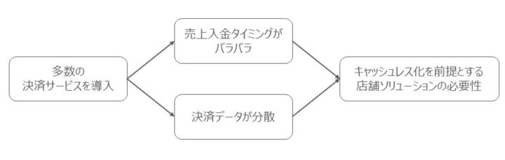
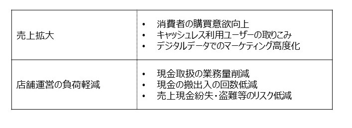
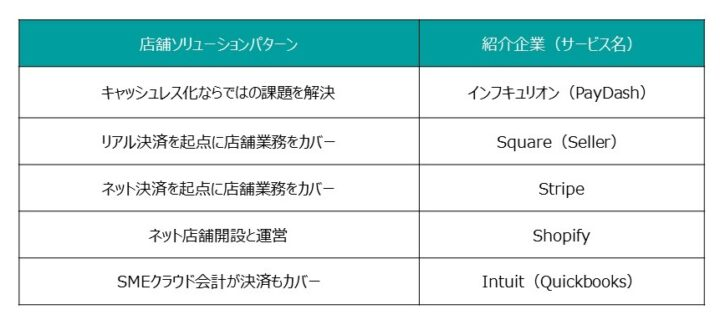
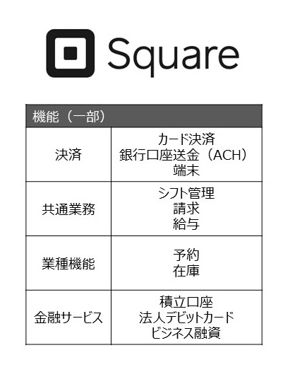
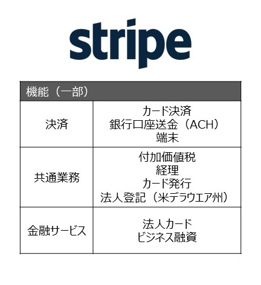
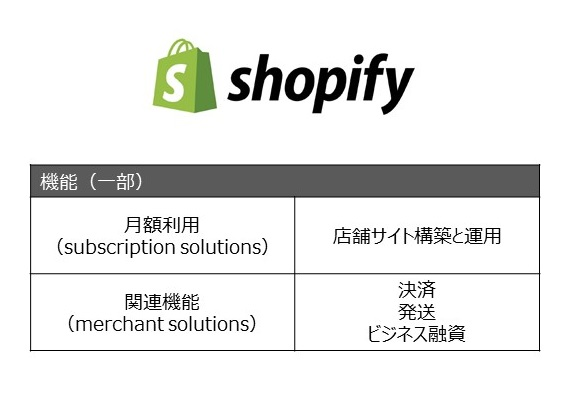

今回はキャッシュレス決済を絡めた、店舗運営の省力化・効率化を支援するソリューションの動向を紹介する。決済を起点に店舗ソリューションを構築するケースや、SME向け業務支援の中に決済を取り込んでいくケースもある。決済は独立したサービスではなく、店舗ソリューションに組み込まれたエンベデッド機能の一つになっていく可能性がある。
この記事は『CardWave』337号(2021年9・10月号)に掲載された「キャッシュレス事業者による店舗支援策が拡大 加盟店の省力化・効率化支援で売上拡大図る」の転載記事です。
目次
キャッシュレス決済の導入効果
2019年10月の消費増税とともに、経済産業省の「キャッシュレス・ポイント還元事業」がスタートしてから2年が経つ。新型コロナウイルスによる混乱を経験しながらも、キャッシュレス決済の加盟と利用は着実な広がりを見せてきた。特にQRコード決済の普及速度には驚かされる。当社の独自リサーチによると、QRコード決済の利用率はすでに54%に達している。これはFeliCa
型電子マネーの58%に迫るもので、日本のキャッシュレス決済ラインアップの一翼を担うものとして大きな存在感を放っている。
キャッシュレス決済を広める上で、消費者にとってのキャッシュレスの利点は分かりやすい。レジで現金を数えて渡すことなく楽に買い物ができ、ポイント還元や割引などの特典を受けるのに特段の手間もかからない。巨額のポイント還元キャンペーンが多くの消費者をQRコード決済利用に呼び込んだことも記憶に新しい。
消費者の購買意欲向上は、加盟店にとっての売上拡大に直結する。クレジットカードをはじめ、各種のキャッシュレス決済サービスは加盟店から見ると販売促進ツールという要素が大きい。キャッシュレス決済利用が広く定着した今では、キャッシュレスでの買い物を好むユーザーの取り込みという観点からもキャッシュレス対応が望ましい。蓄積された決済データをマーケティング活用できることも、加盟店にとっては魅力だ。

表１ キャッシュレス決済の」導入効果
また、最近まであまり注目されることはなかったが、キャッシュレス決済が持つ店舗運営の負荷軽減の効果も見逃せない（表１）。現金を数えて記録するなどの現金取扱業務や、釣銭の補充、売上の銀行入金といった現金の搬出入など、細心の注意を要する業務を削減できることは大きい。売上金の紛失・盗難のリスク低減にもつながる。コロナ禍以前の調査結果だが、キャッシュレス推進協議会が2019年に実施し2020年に結果を公表している「事業者インサイト調査」では、キャッシュレス決済の売上拡大効果よりも店舗運営の負荷を軽減する効果を高く評価する中小事業者の声も報告されている。
キャッシュレス化ならではの課題
国内キャッシュレス決済サービス市場の大きな特徴の一つに、サービスの多様性がある。世界的に普及している国際ブランドカード決済以外にも、日本独自のFeliCa型電子マネーやQRコード決済が広く利用されている。来店客が利用したい決済手段を導入していないことで購買に至らないリスクを考えると、店舗としては消費者が求める決済手段はできるだけ導入しようと考える。
上で述べたとおりキャッシュレス決済には売上向上効果だけでなく店舗運営負荷軽減効果もあるが、今の日本で多数の決済サービスを導入した場合にはそれ特有の課題が生じる。売上入金のタイミングはサービスごとに定められているため、店舗からするとどの売上がいつ入金されるのか把握しづらい。また、個々のサービスにおける決済データはそれぞれの事業者が提供するが、店舗におけるキャッシュレス決済状況を全体的に把握するには店舗側で集計と分析の手間がかかってしまう。この問題はすでに、一定のキャッシュレス決済利用のある加盟店などで顕在化している。日本のさらなるキャッシュレス化のためには、こうした「キャッシュレス化ならではの課題」を潰していく必要がある。キャッシュレス化を前提とする店舗ソリューションが求められる（図1）。

図１ キャッシュレス化ならではの課題
当社インフキュリオンが2021年9月からりそなグループへ提供開始した「PayDash（ペイダッシュ）」はそのようなソリューションの一つだ。加盟店におけるキャッシュレス決済の一元管理と精算業務の簡素化を実現するもので、多様性を維持したまま拡大を続ける国内キャッシュレス決済市場ならではの課題に対するソリューションとしては類を見ない。加盟店の売上入金口座を提供する金融機関を通じて提供するサービス形態は、決済データに基づく資金繰りアドバイスやビジネス融資など、金融サービスのクロスセルにもつなげやすい。
店舗ソリューションの事例分類
「PayDash」はキャッシュレス化ならではの課題を踏まえて考案されたダッシュボードだが、これはさまざまな形態を取り得る店舗ソリューションの一つの形に過ぎない。表２に、本稿で取り上げる店舗ソリューション事例を列挙する。キャッシュレス化が進行中の国内市場だが、キャッシュレス決済を絡めた店舗ソリューションの事例はまだ多くない。本稿の残りでは海外企業の事例から「決済＋店舗ソリューション」の動向を紹介する。

表２ 店舗ソリューションの一例
リアル決済起点の「Square」
2009年に創業し、2013年から日本でも事業を展開しているSquare。スマホやタブレットなど汎用モバイル端末によるモバイル決済でよく知られているが、そのイメージはもう古い。2013年に立ち上げた個人向けネオバンク型フィンテックアプリ「Cash App」が、店舗ソリューション「Seller」と並び立つ事業の柱に成長している。直近四半期の粗利益（gross profit）はSellerが5億8,500万ドルなのに対してCash Appは5億4,600万ドルと遜色ない。Squareはモバイル決済企業から、二つの巨大なエコシステムを持つプラットフォーム企業へと変貌を遂げているが、日本国内では「Seller」の一部しか提供していないため、その全体像が見えにくくなっている。今回はSeller事業に絞ってSquareの店舗ソリューションの概要を紹介する。

表３ 「Square」の提供サービス
Squareの祖業はSME（中小事業者）向けモバイル決済。リアル加盟店でのキャッシュレス決済は今もSellerの中核に位置しており、直近四半期の決済取扱高（Gross Payment Volume）は388億ドル（約4兆2,500億円）。楽天カードの直近四半期取扱高が3兆4,780億円であることを考えればSellerの巨大さが分かるだろう。
しかし、Squareの粗利益の半分以上を叩き出す稼ぎ頭はモバイル決済ではない。2019年頃から粗利益の構成が逆転し、モバイル決済に代わって月額課金の店舗ソリューション（決済機能も搭載している）が粗利益の半分以上を稼いでいる。店舗ソリューションでは従業員のシフト管理や請求、給与などの共通機能だけでなく、美容院や士業向けの予約管理、飲食業向けの在庫管理など業種機能も提供している。売上からの日々の積立ができる貯蓄口座「Square Saving」、現金化していないカード売上をデビットカードの原資に利用できる「Square Checking」、決済データ
をもとに与信するビジネス融資の「Square Loan（旧Square Capital）」といった金融サービスも取り揃えているが、粗利益に占める金融事業の割合は1割程度で推移しているようだ。
起業から間もないSMEをモバイル決済でユーザーとして獲得し、そのSMEが成長していくに従って店舗ソリューションユーザーへと育成していく導線が実現されている。モバイル決済で名を轟かせたSquareは、今や店舗ソリューションプロバイダとしてSME市場のユーザー獲得競争で大きな存在感を放っている。
ネット決済起点の「Stripe」
コード数行で決済をECサイトに組み込めるサービスで成長したStripe は、Amazon、Salesforce、SlackやZoomなど世界的な超有名企業も利用する巨大決済サービスだ。非公開企業のため取扱高等は確認できないがSquareやAdyenなどの大手PSP（Payment Service Provider）をはるかにしのぎPayPalの半分程度に達すると推測する論考もある。
店舗ソリューションに軸足を移したSquareと違い、依然として決済を事業の主軸に置いているStripeだが、それでも決済と関連の深い付加価値サービスをラインアップに加えた店舗ソリューションを展開している（表４）。販売に伴う付加価値税（日本の消費税のような間接税）の処理や決済実績を経理に反映する機能を提供している。PSPではあるがカードのイシュイングも手掛けており、加盟店による提携カード発行も行っている。面白いのは法人登記機能。Stripeを使えば、米国デラウエア州で法人登記し法人口座開設もリモート完結で対応してくれる。コロナ禍における起業ブームの米国でかなり利用されたようで、共同CEOの2020年8月のツイートによると、コロナ禍以降にStripeで登記した加盟店は合計100億ドルの売上を計上したという。

表４ 「Stripe」の提供サービス
EC店舗に対し、決済だけでなく付随サービスも一緒に提供するStripeの戦略は効を奏している模様で、Stripeユーザーの94%は複数プロダクトを利用しているという。店舗運営に必要な機能を提供することで、収益増に加え競合PSPへの乗り換え抑止効果も得られていると思われる。
EC店舗開設の「Shopify」
ECにおいて圧倒的な存在であるAmazon。多くの事業者もAmazonに出店することでEC事業を展開しAmazonとは共存共栄の関係にあるが、そんなAmazonにも死角がないわけではない。Amazon出店者は、顧客との関係を全てAmazonに依存することになり、例えば決済や配送や顧客コミュニケーションで独自色を出すことができない。
多くの事業者が持つそうした自社ブランドへの渇望に応える形で成長してきたのがShopifyだ。ネット店舗の開設と運営の裏方に徹し、顧客と店舗の間には決して入らない。Amazon依存を回避したい店舗の支持を得て、世界175カ国で170万ユーザーに対してサービスを提供しているが、Shopifyにおいても店舗運営のためのソリューションが事業の主軸となっている。

表５ 「Shopify」の提供サービス
直近四半期の売上は11億ドル、そのうち月額利用のネット店舗運営サービスで3億ドル、残る8億ドルは決済・発送などの関連機能からの売上だ。Shopifyを利用して開業し、Shopifyを利用して事業を拡大していく、という導線がうまく機能しており、そこに決済が自然に組み込まれている。直近四半期にShopifyが取扱った決済総額は203億ドルに上る。
日本国内では「Base（ベイス）」が同様の路線で事業を展開している。ユーザー数160万以上とShopifyと肩を並べる規模だが、その9割以上は4名以下の小規模事業者とのことだ。「開業済の店舗に決済を提供」という従来のPSPのビジネスモデルから離れ、「ネット店舗開業を支援し、その後の店舗運営サポートから収益を得る」というSME育成型モデルには今後も注目したい。
クラウド会計が起点「Intuit」
最後に紹介するのはIntuit社のSME向けクラウド会計「Quickbooks」。近年は会計を起点にSME店舗ソリューション化の路線を進めており、2020年にはBanking-as-a-Service先駆者として
知られるGreen Dot銀行との提携によるビジネス口座サービス提供を開始した。ほかにも、在庫管理や給与業務もサポートしている。
そして2021年7月には小型のハンドヘルド型ICカードリーダでリアル店舗決済にも参入。もちろん、決済処理した売上は即座にクラウド会計に反映される。
おわりに
以上、キャッシュレス決済を絡めた店舗ソリューションに取り組む企業事例を紹介した。決済はあくまでも加盟店の店舗運営業務の中のサブ領域の一つにすぎない。決済を起点に店舗ソリューションを構築するものもいれば、SME向け業務支援の中に決済を取り込んでいくものもいる。将来には決済は独立したサービスではなく、店舗ソリューションに組み込まれたエンベデッド機能の一つになっていくのかもしれない。


{kind=link}
{kind=link}
{kind=link}
{kind=link}
{kind=link}
{kind=link}
{kind=link}